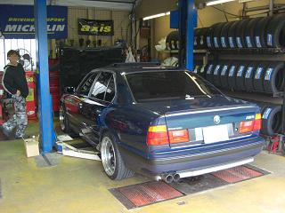
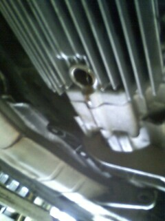
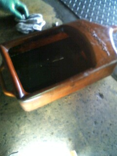
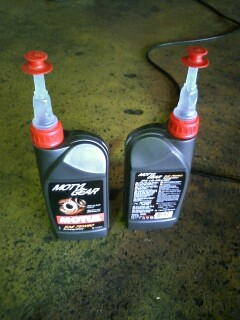
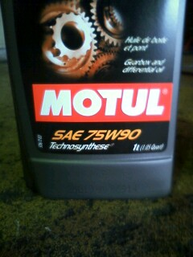
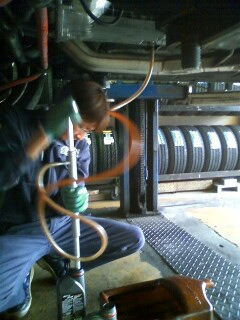
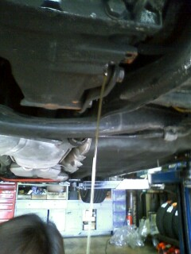

 アルタァさん行き付けのショップ、ピレリ四日市さんで作業してもらいました。
|
  まずは、MTオイルの交換です。 MT化してから１回もオイル交換せず、１万ｷﾛも走ってしまいました。。 MT側面のフィラーボルト（22mm）を外してから底のドレンボルト（17mm）を外す。 万一、フィラーボルトが緩まない場合を考えて、 先にドレンボルトを外してオイルを抜いてしまわないように注意する。 抜いたオイルは鉄粉でメタリック塗料のような色に。。 |
  今回入れたオイル MOTULのギヤオイル75w90
|
 上から新油を入れれないので。。 オイルを入れるにはポンプが必要になる。粘度が高く入れるのにもとても硬そうだった。 特にこれからの時期に交換する場合は、オイルを温めてからのほうが作業しやすいと思う。 オイルフィラーから新油が溢れるまで入れる。1.5Lぐらい入った。
|
 ついでに17年物のデフオイルも交換することに＾＾ こっちは綺麗だった。 MTは、オイルを交換したことにより、載せ換えた頃のようにスコスコ入るようになった。 デフオイルを交換した効果はわかりません（笑 しかし、精神的な効果はバツグン（＾0＾）
|